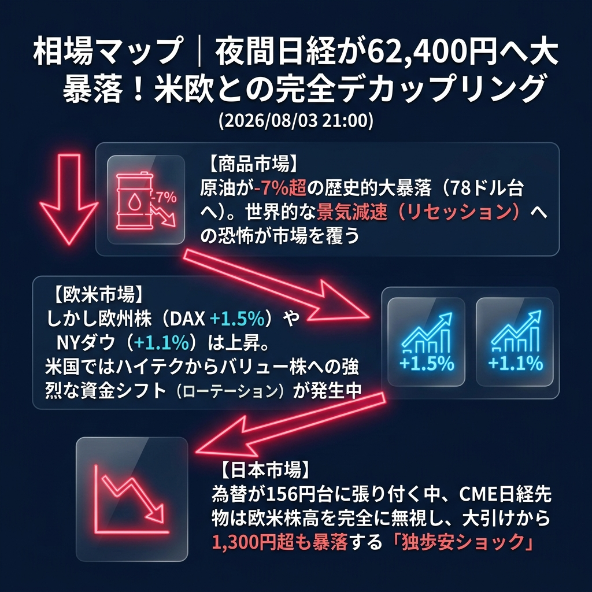

日本市場だけが一人負けする「極端なデカップリング（非連動）」が起きています。欧州株（DAX）やNYダウが1%以上の上昇を見せているにもかかわらず、CME日経先物は16時の大引けからさらに1,300円超も暴落し、62,400円台へと沈んでいます。
原油が-7%を超える大暴落となっており、グローバルな景気減速（リセッション）懸念が台頭する中、米国ではハイテク株から出遅れバリュー株（ダウ）への資金逃避（ローテーション）が発生。円高の重圧に苦しむ日本株は完全に資金の逃避先から外れ、パニック的な売りが止まらない状態です。
「日経先物の1,300円超の大暴落」と「原油暴落が示す景気後退シグナル」。
欧州時間が本格化すると、原油（WTI）が一時78ドル台まで急降下するクラッシュ（-7.22%）を引き起こしました。しかし株式市場への反応は二極化しており、ドイツDAXなどの欧州株やNYダウは堅調に推移しています。
一方で、ナスダック先物は上値が重く、最も悲惨なのが日経平均先物です。156円台に張り付く為替相場に身動きが取れず、海外勢からの強烈な売り仕掛けを浴びて62,400円台まで売り込まれています。
| 指数・銘柄 | 現在値 | 前回比（前日比） | 騰落率 | 確認事項 |
|---|---|---|---|---|
| S&P 500 (ES=F) | 7,570.00 | +50.75 | +0.67% | 底堅く推移 |
| Nasdaq (NQ=F) | 28,469.25 | +65.00 | +0.23% | ダウに比べ上値が重い |
| Dow (YM=F) | 53,221.0 | +586.0 | +1.11% | 【大幅高】バリュー株へ資金シフト |
| 日経225現物 | 63,754.90 | 0.00 | 0.00% | 15:00大引け値 |
| CME日経225先物 | 62,425.0 | -845.0 | -1.34% | 【大暴落】大引けから1300円安 |
| USD/JPY | 156.546 | -0.854 | -0.54% | 156円台半ばで動けず |
| EUR/USD | 1.1530 | +0.0003 | +0.03% | 横ばい |
| 金 | 4,084.9 | -22.1 | -0.54% | やや利益確定売り |
| 原油 | 78.56 | -6.11 | -7.22% | 【歴史的暴落】景気後退の恐怖 |
| BTCUSD | 63,171.19 | -326.06 | -0.51% | 下値で揉み合い |
今夜23:00に発表される「米ISM製造業景況指数」が最大の焦点です。原油がここまで暴落している中で、ISMが「予想外に悪い数字」を出せば、市場の景気後退への恐怖は確信に変わり、ナスダックや日経先物はさらに一段の暴落（パニック売り）に見舞われるリスクがあります。
今夜の米国ISM製造業景況指数が「予想以上に強く」、景気後退の懸念を一掃した場合。米国市場でハイテク株（ナスダック）が猛烈に買い戻され、過剰に売られていた日経平均先物も63,000円台を急速に回復する「ショートカバー（空売りの買い戻し）急反発」のシナリオとなります。